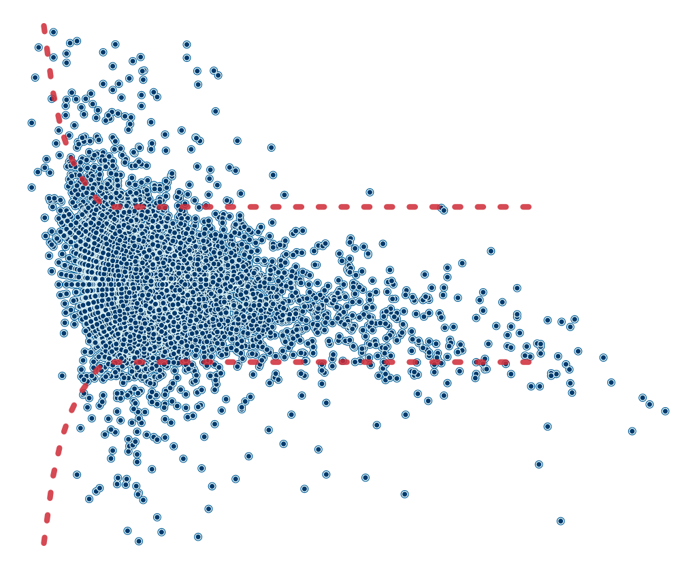

Hex sticker
hexsticker.RmdPackage hex sticker
This vignette covers how the images in the hex-sticker were created.
Data
risk_pairs <- segtools::get_seg_data("AppRiskPairData")
vand_data <- segtools::get_seg_data("VanderbiltComplete")Graph constants
mmolConvFactor <- segtools::mmolConvFactor
mmolConvFactor
#> [1] 18.01806
risk_factor_colors <- segtools::risk_factor_colors
risk_factor_colors
#> [1] "#00A500" "#00FF00" "#FFFF00" "#FF0000" "#800000"
base_data <- segtools::base_data
base_data
#> x_coordinate y_coordinate color_gradient
#> 1 0 0 0
#> 2 0 0 1
#> 3 0 0 2
#> 4 0 0 3
#> 5 0 0 4SEG graph
ggp_seg_hex <- ggplot() +
geom_point(
data = base_data,
aes(
x = x_coordinate,
y = y_coordinate,
fill = color_gradient
),
show.legend = FALSE
) +
geom_point(
data = risk_pairs,
aes(
x = REF,
y = BGM,
color = abs_risk
),
show.legend = FALSE
) +
ggplot2::scale_color_gradientn(
colors = risk_factor_colors,
guide = "none",
limits = c(0, 4),
values = scales::rescale(c(
0, # darkgreen
0.4375, # green
1.0625, # yellow
2.7500, # red
4.0000
))
) +
ggplot2::scale_fill_gradientn(
values = scales::rescale(c(
0, # darkgreen
0.4375, # green
1.0625, # yellow
2.75, # red
4.0 # brown
)),
limits = c(0, 4),
colors = risk_factor_colors,
guide = ggplot2::guide_colorbar(
ticks = FALSE,
barheight = unit(100, "mm")
),
breaks = c(0.25, 1, 2, 3, 3.75),
labels = c(
"None", "Slight",
"Moderate", "High", "Extreme"
),
name = "Risk level"
) +
ggplot2::scale_y_continuous(
limits = c(0, 600),
sec.axis =
sec_axis(~ . / mmolConvFactor,
name = "Measured blood glucose (mmol/L)"
),
name = "Measured blood glucose (mg/dL)"
) +
ggplot2::scale_x_continuous(
limits = c(0, 600),
sec.axis =
sec_axis(~ . / mmolConvFactor,
name = "Reference blood glucose (mmol/L)"
),
name = "Reference blood glucose (mg/dL)"
) +
ggplot2::geom_point(
data = vand_data,
ggplot2::aes(
x = REF,
y = BGM
),
shape = 21,
alpha = 0.75,
size = 3.3,
color = "#000000",
fill = "#FFFFFF",
stroke = 0.4
) +
ggplot2::theme_void(base_size = 20, base_family = "Ubuntu")
ggp_seg_hex
Modified Bland-Altman Plot
ln_risk_pairs <- dplyr::mutate(vand_data,
lnREF = log(REF),
lnBGM = log(BGM),
lnDiff = lnBGM - lnREF,
rel_perc_diff = exp(lnDiff) - 1)
ggp_modba_hex <- ggplot2::ggplot(data = ln_risk_pairs,
mapping = ggplot2::aes(x = REF, y = rel_perc_diff)) +
ggplot2::geom_point(
alpha = 1.0,
size = 2.5,
shape = 21,
fill = "#FFFFFF",
color = "#005b96") +
ggplot2::geom_point(
alpha = 1.0,
shape = 21,
size = 1.88,
color = "#def3f6", #03396c
fill = "#03396c") +
ggplot2::scale_y_continuous(
limits = c(-0.50, 0.50)
) +
ggplot2::geom_line(
ggplot2::aes(x = Ref, y = UB),
data = segtools::APPSEGBlandAltmanRefVals,
linetype = "dotted",
lineend = "round",
linejoin = "round",
color = "#ce2b37",
linewidth = 2.2,
alpha = 0.85
) +
ggplot2::geom_line(
ggplot2::aes(x = Ref, y = LB),
data = segtools::APPSEGBlandAltmanRefVals,
linetype = "dotted",
lineend = "round",
linejoin = "round",
color = "#ce2b37",
linewidth = 2.2,
alpha = 0.85
) +
ggplot2::theme_void(base_size = 20)
ggp_modba_hex
Create hex sticker
The hex-sticker is built with the hexSticker and
magick packages. Below we import
hex-img-raw.png (a combination of the plots above) and
creates the customizations for the hex sticker image:
img_path <- "../man/figures/hex-img-raw.png"
hexSticker::sticker(
img_path,
u_family = "Ubuntu",
# colors
h_fill = "#FFFFFF", # fill
p_color = "#02577A", # package name
h_color = "#043b67", # hexagon border
u_color = "#fa7b3c", # color for url
package = "segtools",
p_size = 18,
p_x = 1,
p_y = 1.51,
s_x = 1,
s_y = .92,
s_width = .92,
url = "mjfrigaard.github.io/segtools",
u_size = 4.5,
filename = "../man/figures/package_hex.png",
)Review
knitr::include_graphics("../man/figures/package_hex.png")